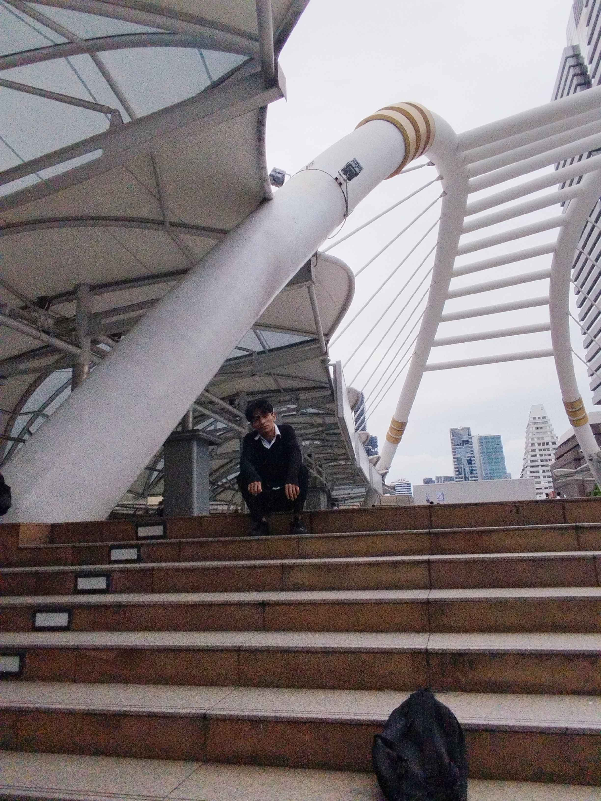

Finding
ในภาพนี้ ผมนั่งอยู่บนบันไดที่มีขั้นบันไดกว้างและยาวจริงๆแล้วมันยาวแต่ผมถ่ายมาแค่นี้ครับ ซึ่งมันทำให้ผมรู้สึกมีพื้นที่กว้างขวางและโปร่งสบาย สถานที่นี้มีโครงสร้างสถาปัตยกรรมที่ทันสมัย โดยมีโครงเหล็กสีขาวที่ถูกออกแบบมาอย่างมีศิลปะและสร้างสรรค์ เพื่อเป็นส่วนหนึ่งของหลังคากันแดดและฝน โครงเหล็กเหล่านี้มีลักษณะเป็นเส้นโค้งและเชื่อมต่อกันอย่างลงตัว ซึ่งช่วยเพิ่มความสวยงามและน่าประทับใจให้กับสถานที่นี้
HOME